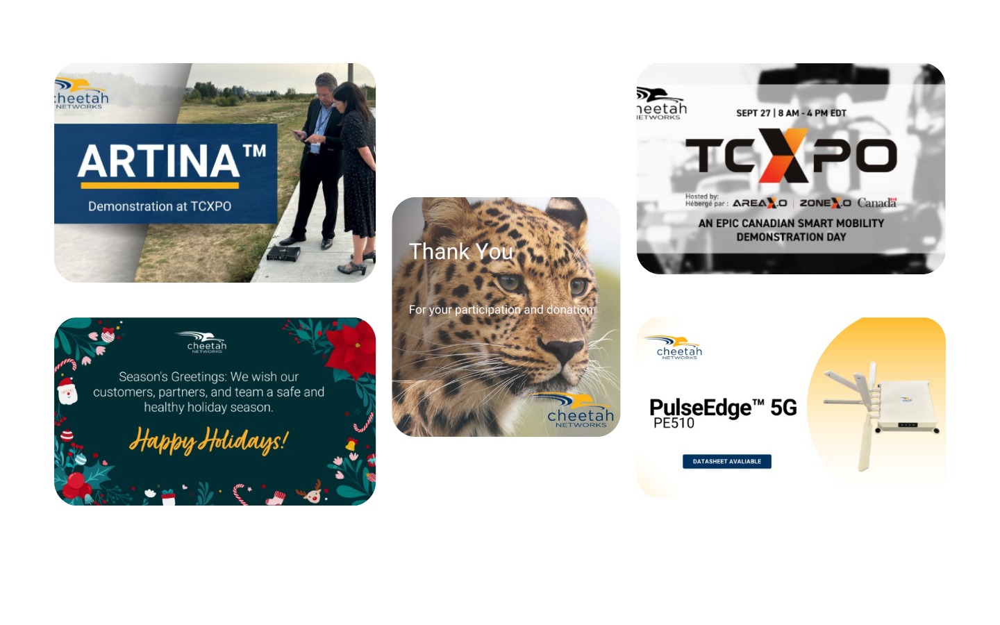

Background
Cheetah Networks needed to bridge the divide between complex network analytics and its B2B executive clientele. I led the end-to-end redesign, focusing on translating real-time network visibility into business value through an optimized information architecture and a scalable design system.
Main Challenge
Users struggled to quickly understand the company's core services and why they should trust the brand.

Identifying Core Challenges
By analyzing the legacy platform's data and user journey, we identified critical friction points that hindered end-user trust and conversion.
-
Cognitive Overload
The dense technical layout led to high drop-off rates as users struggled to navigate complex service layers.
-
Discovery Friction
Critical value propositions and carrier-grade offerings were buried under legacy hierarchical structures.
-
Responsive Debt
The platform lacked mobile agility and failed to fulfill modern SEO and Core Web Vitals standards.
-
Brand Misalignment
The overall UI felt dated and did not reflect Cheetah Networks' position as an industry innovator.
.svg) Insight-Actionable.svg
Insight-Actionable.svg.svg) Isolate-network-issues.svg
Isolate-network-issues.svg.png) Testing.svg
Testing.svg.png) Wireless-network.svg
Wireless-network.svg.png) Dumper.svg
Dumper.svgIconography System
To harmonize the visual language of Cheetah Networks, I developed a custom library of 24+ vector icons. These serve as visual anchors, helping users navigate complex telecom data with ease.
- Grid-Based Geometry Built on a strict 24px organic grid to ensure pixel-perfect rendering across all screen densities.
- Weight Consistency A uniform 2px stroke weight provides a modern, balanced "tech" aesthetic while maintaining high legibility.
- Semantic Design Each metaphor was carefully chosen to simplify high-level technical concepts into intuitive visual cues.
Design-to-Code Strategy
Scalable Design Tokens
Defined a systematic color and typography scale in Figma to ensure a 1:1 parity between design files and CSS variables.
Performance Assets
Optimized SVG iconography and implemented Next.js Image components for ultra-fast Time-to-Interactive (TTI).
Fluid Grid Systems
Architected a flexible 12-column responsive grid using CSS Grid and Flexbox, ensuring multi-device integrity.
Design Principles
Information Architecture
Restructured the complex telecom service taxonomy into intuitive user flows, reducing cognitive load for new leads.
Visual Hierarchy
Leveraged purposeful white space and high-contrast typography to guide users through high-stakes technical data.
Modular Scalability
Built a robust library of card-based components, allowing the Cheetah team to easily scale content without breaking the UI.
Development Workflow
Audit & Research
Deep-dive into legacy site metrics, competitor benchmarking, and stakeholder interviews to define project KPIs.
Rapid Prototyping
Iterating from low-fidelity wireframes to interactive Figma prototypes, testing edge cases in responsive behavior.
Handoff & QA
Delivering production-ready assets and technical documentation to ensure pixel-perfect front-end implementation.
Deep-Dive Transformation
Bridging the gap between Carrier-Grade visibility and B2B user experience through data-driven design.

Cluttered Architecture: Dense layout and ambiguous hierarchy led to high friction during service discovery.

Optimized IA: Rationalized taxonomy into intuitive flows, leading to a significant increase in content clarity and messaging focus.

Responsive Debt: Legacy structure lacked mobile agility, resulting in poor engagement on handheld devices.

Design Tokens: Implemented a scalable fluid grid system, ensuring a pixel-perfect experience across all B2B environments.
Marketing & Visual Design
